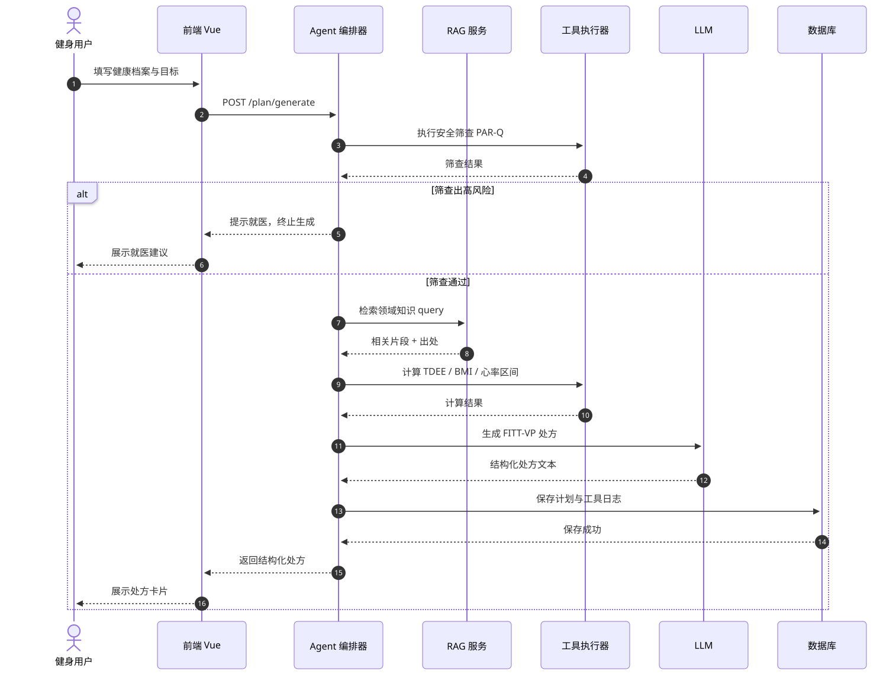

| 版本 | 日期 | 修订说明 | 修订人 | 审核人 |
|---|---|---|---|---|
| V0.1 | 2026-10-26 | 初稿：架构框架与模块划分 | （待填） | （待填） |
| V0.9 | 2026-11-05 | 补充 UML 图、Agent 集成、接口设计 | （待填） | （待填） |
| V1.0 | 2026-11-08 | 评审定稿 | （待填） | （待填） |
本文档是《跃动 MoveMate》软件系统的概要设计说明书，在第一次作业《选题报告与需求分析》的基础上，自顶向下地描述系统的总体架构、功能模块、运行逻辑与数据结构。文档面向软件工程课程评审教师、助教以及项目组全体成员，作为后续详细设计、编码实现与测试的输入依据。
文档遵循《软件设计说明书》（GB/T 8567-2006）的规范文本结构，采用分层描述方式：随层级深入，描述粒度由系统级架构逐步细化到模块、类与接口，并对全部缩写进行事先定义。
本项目定位于「大众健身」领域。专业运动指导（私教、运动医学门诊）成本高、可及性低，而大众（尤其是健身入门者）普遍存在「不知道怎么开始、不知道怎么练、怕受伤、难以坚持」的痛点。通用大模型虽能对话，却缺乏领域约束、工具计算与安全筛查，无法给出可执行、可追踪、可动态调整的运动处方。
跃动 MoveMate 以领域 Agent为核心，将运动科学知识（FITT-VP、强度量化、安全筛查等）结构化组织为知识底座，通过「检索增强生成（RAG）+ 工具调用（Function Calling）+ 多步流程编排」，为每位用户生成个性化、安全、可持续的运动处方，并提供打卡追踪与动态调整，形成「评估—计划—追踪—调整」的完整闭环。
| 缩写 / 术语 | 全称与说明 |
|---|---|
| Agent | 智能体；基于大语言模型、具备工具调用与流程编排能力的自治软件单元。 |
| LLM | Large Language Model，大语言模型。 |
| RAG | Retrieval-Augmented Generation，检索增强生成；先检索领域知识再生成，提升准确性与可溯源。 |
| FITT-VP | Frequency / Intensity / Time / Type / Volume / Progression，运动处方六要素（频率/强度/时间/类型/总量/进阶）。 |
| PAR-Q | Physical Activity Readiness Questionnaire，体力活动准备问卷，用于运动前安全筛查。 |
| TDEE | Total Daily Energy Expenditure，每日总能量消耗。 |
| BMR | Basal Metabolic Rate，基础代谢率。 |
| BMI | Body Mass Index，身体质量指数。 |
| RPE | Rating of Perceived Exertion，主观疲劳量表。 |
| MET | Metabolic Equivalent，代谢当量。 |
| SMART | Specific / Measurable / Achievable / Relevant / Time-bound，目标设定原则。 |
| API | Application Programming Interface，应用程序编程接口。 |
| UML | Unified Modeling Language，统一建模语言。 |
| ER | Entity-Relationship，实体-关系（模型）。 |
| ORM | Object-Relational Mapping，对象关系映射。 |
| MVP | Minimum Viable Product，最小可行产品。 |
| SRS | Software Requirements Specification，软件需求规格说明书。 |
依据第一次作业需求分析，系统需实现的核心功能模块及优先级如下：
| 优先级 | 功能模块 | 说明 |
|---|---|---|
| P0 | 用户档案与评估 | 信息采集、PAR-Q 安全筛查、体测自评 |
| P0 | 计划生成引擎 | RAG + 工具 + 编排，输出 FITT-VP 运动处方 |
| P1 | 计划解释与问答 | 对计划「为什么/出处/换动作」的可解释对话 |
| P1 | 训练打卡与追踪 | 打卡、体重/围度/体测记录、进度曲线 |
| P1 | 动态调整 | 基于反馈数据自动重算、更新计划 |
| P2 | 知识库管理 | 动作库、指南条目的增删改查（管理端） |
关键非功能需求：计划生成响应 < 10 秒；强度计算可溯源；全程标注「非医疗建议」；健康数据加密、最小化收集；移动端友好；模型与平台可替换；高危筛查结果引导就医。
系统采用分层架构，自上而下分为表现层、接口层、应用层、Agent 编排层、数据层五层。分层使得每一层职责单一、可独立替换，Agent 编排层作为核心，向下统一调度领域知识与工具。

包含用户端与管理端两个 Web 应用：用户端面向健身用户，提供档案评估、处方生成、问答、打卡与进度曲线等交互；管理端面向管理员，提供用户管理、知识库管理、Agent 配置、内容审核与数据统计。前端采用 Vue 3，响应式适配移动端。
以 API Gateway 统一对外提供 RESTful API 与 WebSocket。普通业务走 REST；智能体对话因需流式输出，采用 WebSocket 或 SSE 长连接推送 token，提升交互体验。
按业务域拆分为五个服务：用户服务（认证/档案/评估）、计划服务（处方生成/动态调整）、追踪服务（打卡/进度曲线）、知识库服务（文档/动作库）、管理服务（用户/审核/统计）。各服务通过内部接口协作。
系统核心智能体所在层，由编排器统一调度 RAG 检索、工具调用、会话记忆与 LLM 接入。详见第 5 章。
PostgreSQL 存业务数据（用户、计划、打卡、会话等）；向量库（pgvector / Milvus）存知识切片向量；Redis 存会话缓存；对象存储存课件与动作图片。详见《数据库设计说明书》。
模块划分与「功能需求—程序单元」的对应关系如下：
| 功能需求 | 所属服务 | 主要程序单元（模块） |
|---|---|---|
| 用户档案与评估 | 用户服务 | AuthModule、ProfileModule、AssessmentModule |
| 计划生成引擎 | 计划服务 + Agent 编排层 | PlanModule、AgentOrchestrator、RAGService、ToolRegistry |
| 计划解释与问答 | 计划服务 + Agent 编排层 | ChatModule、AgentOrchestrator、RAGService |
| 训练打卡与追踪 | 追踪服务 | CheckinModule、ProgressModule |
| 动态调整 | 计划服务 | AdjustModule、AgentOrchestrator |
| 知识库管理 | 知识库服务 | KnowledgeModule、ActionModule |
| 用户/审核/统计 | 管理服务 | AdminUserModule、AuditModule、StatsModule |
| 层 | 技术方案 | 说明 |
|---|---|---|
| 前端 | Vue 3 + Vite + Element Plus | 响应式，移动端友好，组件化开发 |
| 后端 | Python FastAPI（或 Node.js） | 异步、类型安全，便于与 AI 生态集成 |
| Agent 编排 | 自建编排（LangChain + Function Calling）或 Dify/扣子 | 可视化编排 + 知识库 + 工具，便于快速上线 |
| 模型 | 通过 API 接入（GPT/Claude/Kimi/文心一言） | 模型可替换，与业务解耦 |
| 数据库 | PostgreSQL + pgvector | 业务数据 + 向量检索一体 |
| 缓存 | Redis | 会话缓存、限流 |
| 对象存储 | OSS（云对象存储） | 课件、动作图片等静态资源 |
| 部署 | 云服务器 + Docker | 容器化，提供访问地址与测试方式 |

| 要素 | 内容 |
|---|---|
| 参与者 | 健身用户 |
| 前置条件 | 用户已登录并完成健康档案填写 |
| 主流程 | ① 用户填写身高/体重/年龄/目标/运动史/禁忌 → ② 系统执行 PAR-Q 安全筛查 → ③ 若通过，RAG 检索知识、工具计算数值、LLM 生成 FITT-VP 处方 → ④ 用户确认或修改 → ⑤ 处方保存并展示 |
| 异常流程 | 筛查出高风险 → 提示就医并终止；工具/模型调用失败 → 重试或降级提示 |
| 后置条件 | 生成结构化处方，写入 ExercisePlan 与 PlanItem |
| 要素 | 内容 |
|---|---|
| 参与者 | 健身用户 |
| 前置条件 | 用户已登录 |
| 主流程 | ① 用户就当前计划提问（为什么这样安排/能否换动作）→ ② 系统基于会话上下文 + RAG 检索 → ③ LLM 生成带出处的回答 → ④ 流式返回并记录会话与工具日志 |
| 异常流程 | 问题涉及医疗诊断 → 明确引导就医，不越界 |
| 后置条件 | 写入 ChatMessage，附引用出处 |
| 要素 | 内容 |
|---|---|
| 参与者 | 管理员 |
| 前置条件 | 管理员已登录并具备权限 |
| 主流程 | ① 上传/编辑领域文档（指南、教材）→ ② 系统切片并生成向量 → ③ 维护动作库条目 → ④ 审核问答记录 |
| 后置条件 | 知识库与向量索引更新，可被 RAG 检索命中 |
系统核心业务为「个性化运动处方生成与动态调整」。以活动图描述其业务流程，覆盖从信息采集、安全筛查到闭环调整的完整路径：

流程要点：
智能体命名为「跃动处方师」，定位为「认证运动处方师助手」，面向大众健身、语气专业但小白友好。其设计遵循三个层次：
Agent 的专业性来自对以下运动科学知识的结构化组织，这些知识是「领域定制」的底座：
| 知识域 | 内容 |
|---|---|
| 运动处方学 | FITT-VP 六要素，处方基本骨架 |
| 强度量化 | 储备心率法、卡氏公式、RPE、MET 代谢当量 |
| 能量代谢 | BMR、TDEE、热量缺口、宏量营养素配比 |
| 训练类型 | 有氧/抗阻/柔韧/平衡/神经肌肉训练 |
| 进阶原则 | 渐进超负荷、周期化、恢复与超量恢复 |
| 安全筛查 | PAR-Q+、运动禁忌、损伤风险、慢病注意事项 |
| 数据标准 | BMI、体脂率、国家学生体质健康标准评分 |
| 动作库 | 动作规范、目标肌群、常见错误与替代动作 |
知识源包括《ACSM 运动处方指南》《中国居民膳食指南》《国家学生体质健康标准》、运动医学入门教材与动作库。文档经切片后写入向量库，检索时标注出处。
Agent 通过 Function Calling 调用以下工具完成数值计算与结构化生成：
| 工具名 | 功能 |
|---|---|
| calc_tdee | 按性别、年龄、身高、体重、活动系数计算每日总消耗 |
| calc_bmi | 计算 BMI、体脂率并判定区间 |
| heart_rate_zone | 按储备心率法计算燃脂/有氧/无氧目标心率区间 |
| training_volume | 计算训练容量与渐进负荷 |
| fitness_score | 按体测标准评定达标情况 |
| plan_generator | 整合评估结果，生成结构化运动处方（FITT-VP） |
Agent 将单次「生成处方」编排为多步任务闭环：
智能体作为独立编排层嵌入分层架构，与软件系统的集成要点：
类图描述系统静态结构。上半部分为领域实体类（与数据库表一一对应，详见《数据库设计说明书》），下半部分为服务/编排类（Agent 编排层核心）。

| 类 | 职责 |
|---|---|
| User | 用户（健身用户/管理员），含角色字段 |
| HealthProfile | 健康档案，含 PAR-Q 筛查结果与禁忌 |
| ExercisePlan / PlanItem | 运动处方及其训练条目（FITT-VP 结构） |
| WorkoutLog | 训练打卡与身体数据记录 |
| ChatSession / ChatMessage | 智能体会话与消息，含引用出处 |
| KnowledgeDoc / KnowledgeChunk | 领域知识文档及其向量切片 |
| Action / ToolLog / AgentConfig | 动作库、工具调用日志、Agent 配置 |
| AgentOrchestrator | 编排器，驱动多步任务闭环，调度工具与检索 |
| RAGService / ToolRegistry | 检索服务、工具注册与执行 |
时序图描述最重要的算法模块——「运动处方生成」中，各对象间随时间展开的消息交互：

协作图强调对象之间的结构关系与编号消息传递：

用户接口以 Web 页面承载，主要包括：用户端「健康档案与评估」「处方生成」「智能体对话」「打卡与进度」页面，以及管理端「用户管理」「知识库管理」「Agent 配置」「内容审核」「数据统计」页面。界面原型详见原型设计展示（在线链接见团队博客）。
| 接口 | 说明 |
|---|---|
| LLM API | 通过统一 LLM 接入层调用可替换模型，输入提示词 + 上下文 + 工具定义，输出文本/工具调用请求 |
| 向量库 | 写入知识切片向量、按相似度检索 Top-K 片段 |
| 对象存储 | 课件、动作图片上传与读取 |
| 方法 | 路径 | 说明 |
|---|---|---|
| POST | /api/auth/register | 用户注册 |
| POST | /api/profile/assess | 提交健康档案与 PAR-Q 筛查 |
| POST | /api/plan/generate | 生成运动处方（触发 Agent 编排） |
| POST | /api/chat/ask | 智能体问答（WebSocket 流式） |
| POST | /api/log/checkin | 训练打卡 |
| GET | /api/progress/{userId} | 进度曲线数据 |
| POST | /api/admin/knowledge | 知识库条目维护（管理端） |
系统按「用户端链路」与「管理端链路」组合运行：用户端链路为「表现层→接口层→用户/计划/追踪服务→Agent 编排层→数据层」；管理端链路为「表现层→接口层→知识库/管理服务→数据层」，管理端仅在对知识库切片、Agent 配置时与编排层交互。
处方生成端到端响应目标 < 10 秒；RAG 检索 < 1 秒；工具计算 < 0.5 秒；打卡写入 < 0.3 秒。
| 类别 | 措施 |
|---|---|
| 出错信息 | 统一错误码与友好提示；网络失败、模型超时给出明确重试引导 |
| 补救措施 | 工具/模型调用失败自动重试 2 次后降级为静态提示；处方生成失败回滚事务 |
| 安全边界 | PAR-Q 高风险项强制引导就医；问答涉及诊断一律不越界；全程标注「非医疗建议」 |
| 数据安全 | 健康数据加密存储、最小化收集；接口鉴权（JWT）与权限分级 |
| 系统维护 | 日志可溯源（ToolLog 记录工具调用入参/出参）；知识库版本可回滚 |